智能密码钥匙与APDU学习笔记
智能密码钥匙
智能密码钥匙是一种终端密码设备，具备密码运算、密钥管理功能，主要用于存储用户秘密信息（如私钥、数字证书），并完成数据加解密、数据完整性校验、数字签名、访问控制等功能。
智能密码钥匙应用数据接口数据格式位于智能密码钥匙应用程序和设备之间，如下图所示：

智能密码钥匙应用数据接口与设备之间的数据交换以APDU的形式进行编码。APDU可包含有命令报文或响应报文，它从设备接口发送到密码钥匙，或者相反地由密码钥匙发送到设备接口。
命令APDU
如图所示，本部分所定义的命令APDU由下列内容组成：
——必备的4字节命令头（CLA INS P1P2）；
——有条件的可变长度主体。
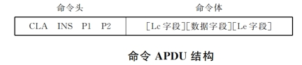
在命令APDU的数据字段中出现的字节数用Lc来表示。
在响应APDU的数据字段中期望的字节最大数用Le（期望数据的长度）来表示。当Le字段只包含0时，则要求有效数据字节的最大数。命令APDU有以下四种结构
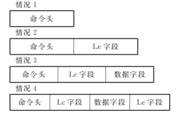
在情况1时，长度Lc为0，因此Lc字段和数据字段都为空。长度Le也为0，因此Le字段为空。从而，命令体为空。
在情况2时，长度Lc为0，因此Lc字段和数据字段都为空。长度Le不为0，因此Le字段存在。从而，命令体由Le字段组成。
在情况3时，长度Lc不为0，因此Lc字段存在，并且数据字段由Lc后续字节组成。长度Le为0，因此Le字段为空。从而命令体由Lc字段后紧跟着数据字段组成。
在情况4时，长度Lc不为0，因此Lc字段存在，并且数据字段由Lc后续字节组成。长度Le也不为0，因此Le字段也存在。从而命令体由Lc字段后紧跟着数据字段和Le字段组成。
响应APDU
响应APDU由以下部分组成：
——有条件的可变长度主体；
——必备的2字节状态字（SW1—SW2）。
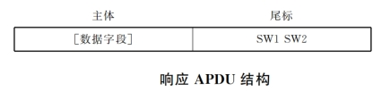
在响应APDU的数据字段中呈现的字节数用Lr来表示。
状态字对“命令响应对”之后的接收实体的状态进行了编码。
注：如果该命令被放弃，则响应APDU是一个状态字，它按2个状态字节来编码出错条件。
命令头、数据字段和响应状态字的编码约定
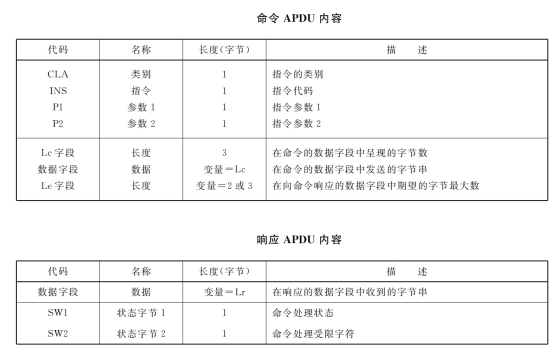
l CLA（类别）字节
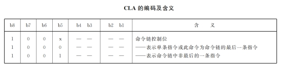
l INS（指令）字节
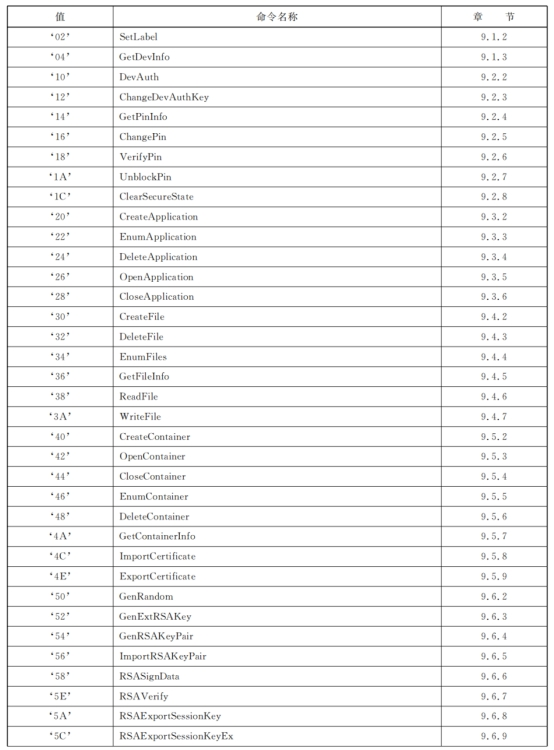
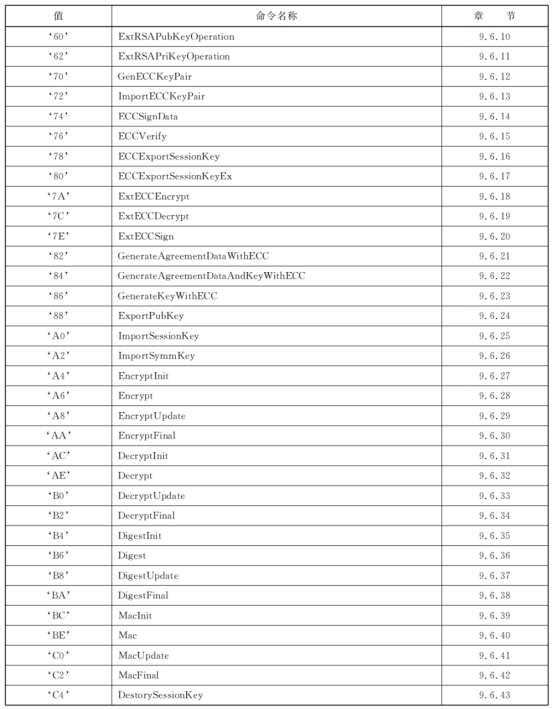
状态字节
响应的状态字节SWI-SW2表示了密码钥匙内的处理状态。下图示出了标准定义的值的结构方案。
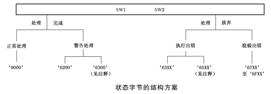
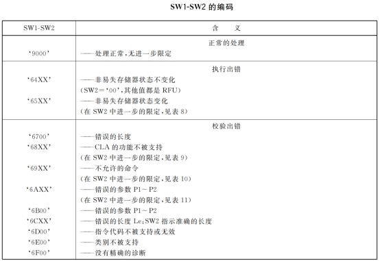
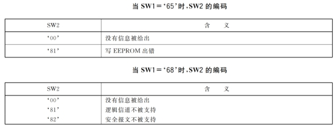
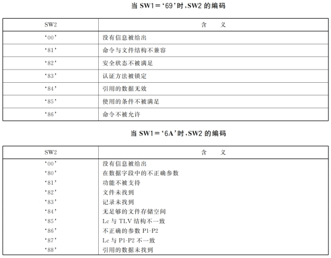
实操中重点关注APDU报文部分，报文可用Bushound进行抓取，报文分析参考标准GM/T 0017-2012《智能密码钥匙 密码应用接口数据格式规范》
以某段模拟数据为例进行分析，文件包含有设备、长度、命令、数据、描述等信息
签名报文
分析时首先寻找签名部分，如下图
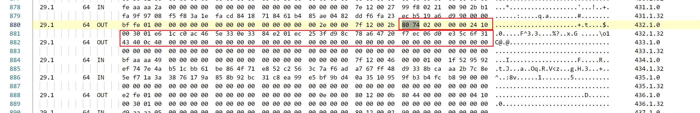
解题依据：ECC签名命令报文在标准中定义以8074开头，其他内容为P1、P2、Lc、Data、Le

根据响应长度即可解构出报文数据，8074为报文头，P1字段为02，P2为00，Lc字段为000024，DATA中的应用ID为1000，容器ID为3001，之后36比特为数据，最后2比特0000为Le值
响应报文
签名报文完成后寻找响应报文，响应报文状态码在标准中定义如下：
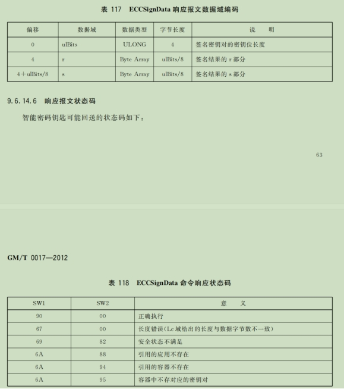
9000为正确执行，因此在数据包中寻找签名报文后响应为9000的数据，往前数32位即为签名数据，由于数据格式问题，需要排除签名第二行开头的5e，其实需排除每段响应报文的第一个字节（但是标准中并没有找到，和大佬交流后默认所有数据进行排除）
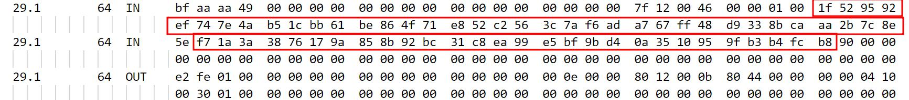
提取证书
在APDU中有导出证书操作，根据GM/T 0017中的规定，在导出证书操作中的命令报文编码如下：
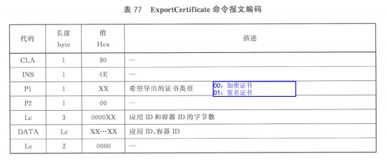
因此在寻找报文时主要先看命令头，以上述APDU报文为例进行分析，筛选804E即可找到导出证书部分的报文，其中包含证书，且证书为加密证书。

此时直接提取会发现证书无法解析，因为在证书以6A 9E为结尾时表明还未传输完毕，需继续寻找下一个804E字段，直至到9000正确响应，但是其中的数据需进行区分，从第一个3082证书头开始，到6A 9E为证书有效内容，另外第二个包则需要按照签名值长度往前数对应字节数进行拼接，最终有效部分如下：
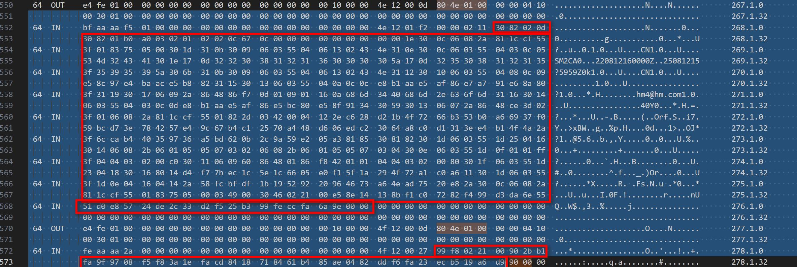
取出相应内容后证书即可解析
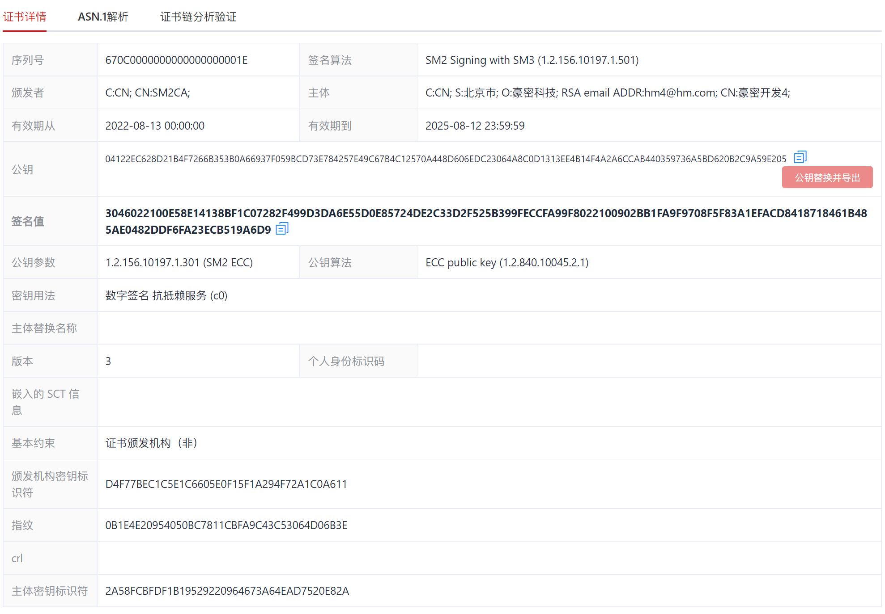
因一些原因，该段报文的数据包无法给出，建议有条件的朋友自行抓取